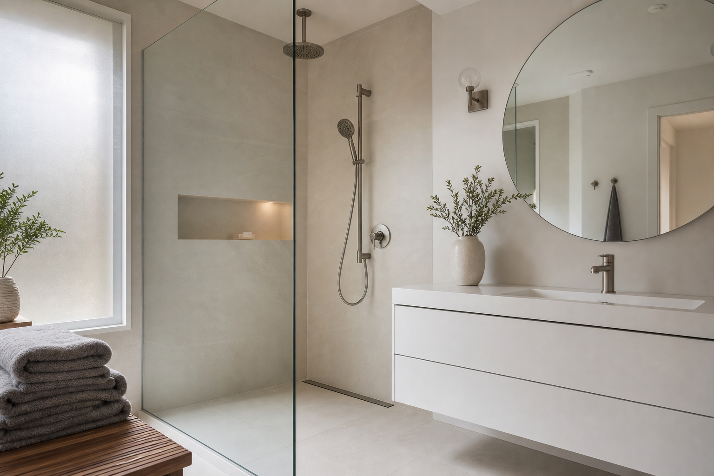

Floating Vanity Bathroom Design: Pros, Cons & Install Tips
A floating vanity bathroom design is one of the fastest ways to make a remodel feel contemporary. Wall-mounted vanities can improve sightlines, make floor cleaning simpler, and pair beautifully with integrated sink countertops. The key is knowing the installation realities before you fall in love with the aesthetic. Bathroom remodel pros can confirm blocking and plumbing early so the wall can carry the load.
Why floating vanities are popular in modern remodels
Floating vanities read as intentional. They emphasize horizontal lines, make tile or large-format flooring more visible, and often feel “designer†even with a simple cabinet door style.
They also pair naturally with wall-hung toilets, curbless showers, and large-format tile—three choices that all depend on careful planning behind the finish layer.
Pros: sightlines, cleaning, customization
- More visible floor area can make a bathroom feel larger.
- Easier floor cleaning under the vanity footprint.
- Flexible heights for households that want a tailored vanity elevation.
If you are aging in place or have a tall household, floating vanities make it easier to land on a comfortable working height without odd toe-kick compromises.
Cons: structure, storage, plumbing visibility
- Wall support requirements are non-negotiable for a rigid install.
- Storage volume may shrink unless you invest in deeper drawers or nearby cabinetry.
- Plumbing must be neat because the underside is part of the visual design.
In remodels with exterior walls, insulation and blocking can compete for the same cavity space. Resolve that early so the vanity does not end up shifted off-center relative to the mirror.
Mirrors and lighting that complement wall-mounted vanities
Round mirrors are popular because they soften boxy geometry. If you want backlighting, plan electrical early and confirm fixture ratings and mirror sizing so light bands look even.
Sconce placement should be coordinated with mirror width and door swing. Nothing undermines a floating vanity faster than a sconce that casts harsh shadows across the face or blocks a medicine cabinet from opening fully.
A practical storage plan
If you choose a minimalist floating vanity, add storage elsewhere so countertops stay clear. Recessed medicine cabinets, tall linen storage, and shower niches are common compensations. Bring those priorities to a bathroom design consultation so cabinetry and rough-in align.
Drawer organizers and electrical inside drawers (for styling tools) are small upgrades that keep a minimal footprint livable. Plan GFCI protection any time you bring power to a wet environment.
Height, ergonomics, and who uses the bath
Standard heights are a starting point, not a rule. Consider elbow comfort for everyone who uses the vanity daily, kids who may grow into the space, and whether you want the sink shallow enough to lean over comfortably.
Wall-mounted vanities can expose more of the wall tile—use that as a design opportunity with a feature strip or continuous grout line that aligns with the cabinet edge.
Integrated sink tops and faucet drilling
One-piece integrated tops reduce grout at the sink line and read very clean. They also lock you into faucet hole spacing that matches the slab—verify centers before you order.
If you want a widespread faucet or a wall-mounted faucet, the rough-in must be perfect because there is no deck to hide small misalignments. Your bathroom installer should template from the actual cabinet, not a catalog drawing.
Towel bars, outlets, and in-wall extras
Floating vanities leave wall space below, but that does not mean every inch should be accessorized. Think about where wet hands reach first—often a towel ring or bar near the sink and a hook near the shower.
If you are considering a drawer outlet or in-drawer hair tool storage, confirm code-clear locations with your electrician. Heat-producing tools need breathing room even inside cabinets.
Install mistakes that show up later
- Insufficient blocking: a vanity that flexes when you push on the counter.
- Drain too low or off-center: visible traps or strained supply lines under the cabinet.
- Ignoring lateral loads: kids leaning on counters—anchoring must handle real life, not just static weight.
FAQ
Is a floating vanity harder to install?
It is more dependent on correct blocking and plumbing planning than a standard floor-mounted vanity.
Do floating vanities reduce storage?
They can. Choose drawer layouts intentionally and add complementary storage in the room.
Can any wall support a floating vanity?
Not without verification. Stud spacing, blocking, and wall material (tile over cement board, for example) all factor in. Heavy stone tops need engineering-minded anchoring.
Are floating vanities harder to clean underneath?
The open floor is easier to mop, but dust can collect on horizontal ledges inside the cabinet if doors are not sealed well. Choose cabinet lines with tight reveals if that bothers you.